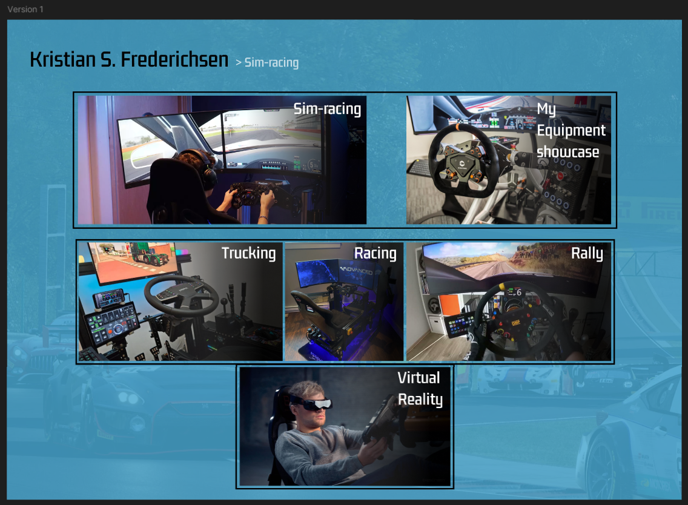
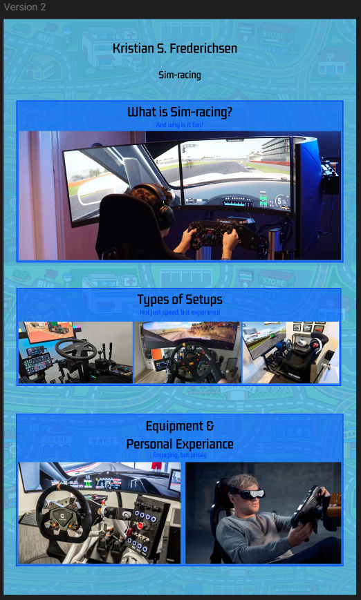
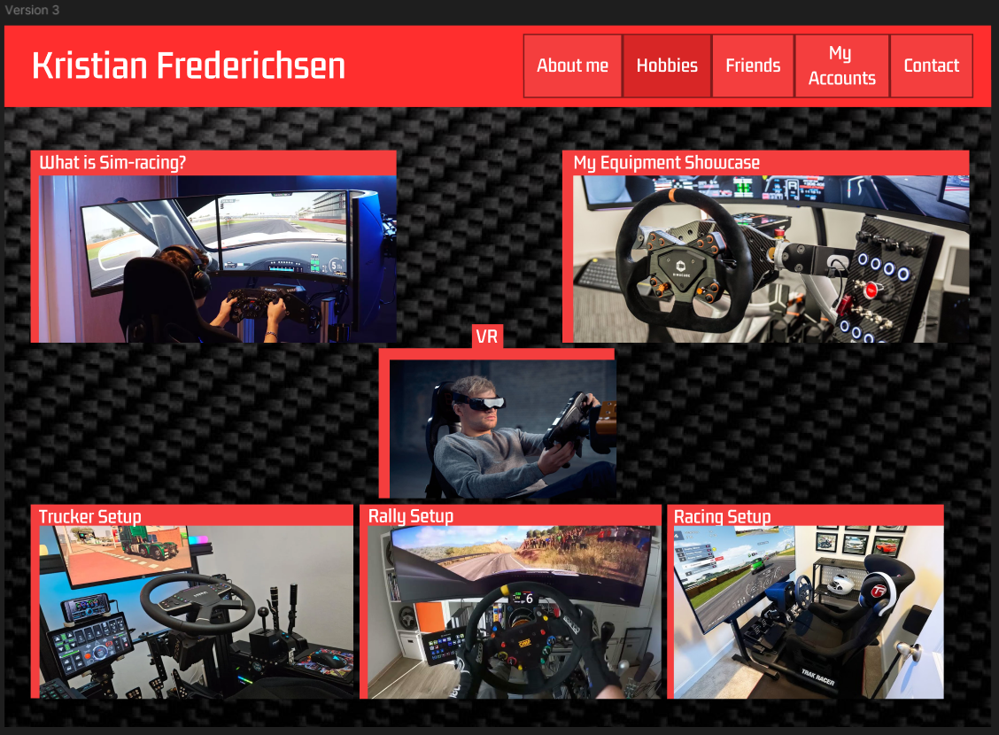

Portfolier om Hobby
I denne opgave skulle vi individuelt, i figma, lave tre versioner af en forside omkring os selv, eller noget vi kan lide. F.eks. en hobby. Vi fik også en video med inspiration til hvordan det evt. kunne se ud.
For mine portfolier valgte jeg at lave noget omkring simuleret race, AKA: 'sim-racing'. Jeg kan godt lidt biler og race, så derfor giver det lidt sig selv at det er noget der interessere mig. Kort sagt er det en hobby der handler om at man kører biler, typisk racerløb, med rat og pedaler lavet til at sætte til en PC eller konsol.
Version 1
I version 1 gik jeg meget efter samme stil som det blev vist i videoen vi blev tildelt. Billederne i sig selv skal forstille at være klikbare felter der bringer én hen til det titlen siger. De sorte kasser rundt om billederne er til for at skabe et bedre overblik over hvad der hører mere sammen end andet. Altså proximity. Baggrunden er en lys blå med et svagt billede af racerbiler.
De første billeder er størst, fordi det er dem det handler mest om; selve hobbien og mit udstyr. I kassen nedenunder er det forskellige typer af spil og setups, fordi selvom det kaldes "sim-racing" er det ikke kun racerløb, men selve det at køre i virtuelle biler og oplevelsen. Om det er at køre lastbil, rally, racerbiler eller veteran biler.
Nederst er en kasse med VR som står op ad kassen med typer af setups. Den er dog i en kasse for sig selv fordi virtual reality ikke er nødvendigt for et setup, men er en oplevelse i sig selv, som man kan vælge at bygge op omkring, eller have ved siden af som noget man bruger en gang i mellem.
Version 2
I version 2 valgte jeg at gøre det hele lidt større. Jeg holdte mig til den blå baggrund, men ændrede billedet i baggrunden til at være et mønster fra et tæppe man som lille leger med legetøjsbiler på. Det valgte jeg som en blanding af noget nostalgi og for at gøre det lidt mindre professionelt og mere 'mig'.
Jeg har stadig 3 forskellige kasser, men denne gang har jeg valgt at sætte tingende der var adskildt i version 1, sammen i én stor, klikbar kasse med en titel og en undertitel/kommentar. Titlerne er også blevet mere klare på hvad de hver især er.
En anden gang vil jeg nok vælge en anden farve til undertitlen, måske en mørkere eller lysere blå, som står mere frem. Som de står lige nu, er det meget utydeligt med mindre man zoomer ind, hvilket ikke er godt for læsbarheden.
Version 3
Med version 3 gik jeg helt væk fra det blå design og gik i stedet med en lidt lys rød som gør den hurtig identificerbar, uden at tage alt opmærksomhed. Som baggrund valgte jeg et mønster af karbonfiber, et materiale ofte brugt i racerbiler.
Det er sat op lidt på samme måde som version 1, men med VR i midten, i stedet for i bunden. Billerne har fået en kan til venstre og ovenpå, hvor titlen også ligger i, for at gøre det nemt at se hvad den titel eller billedet handler om.
Reflektioner
Med denne opgave har jeg lært omkring hvordan man bruger proximity, farver, former og størrelse til at sætte, i dette tilfælde et portfolio, op. At der er betydning for alle disse ting, i forhold til hvordan en person udefra vil interagere med det hvis de så det første gang.
Jeg havde selv lidt svært ved at komme med idéer til hvordan man lige kunne bruge billederne på forskellig vis til at få samme eller lignende resultat, men kan dog godt lide resultaterne, selvom der godt kunne bruges noget ekstra tid på at finpudse dem.